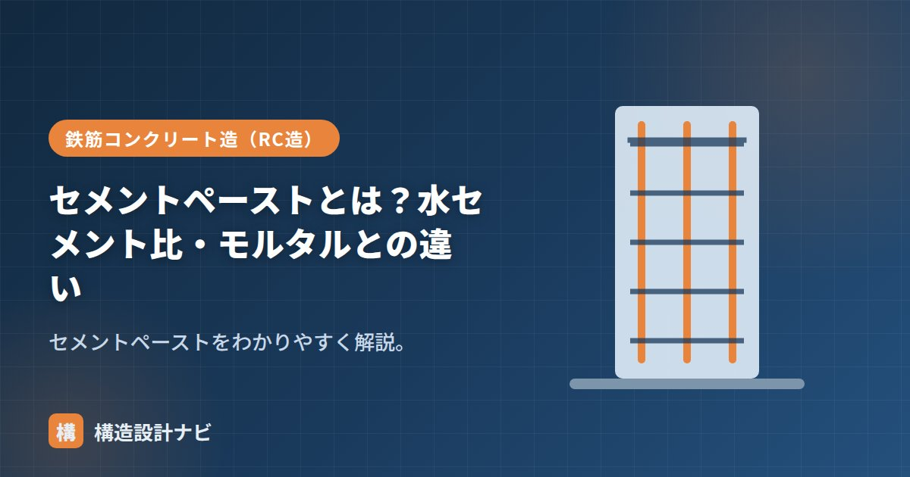

セメントペーストとは？水セメント比・モルタルとの違い

セメントペーストとは、セメントと水だけを練り混ぜたペースト状の材料のことです。骨材（砂・砂利）を含まず、現場では「ノロ」とも呼ばれます。コンクリートの中で骨材どうしを固める「のり（結合材）」の正体がこのペーストであり、コンクリートの強度・耐久性はペーストの質でほぼ決まります。この記事では、セメントペーストの意味、水セメント比との関係、モルタルとの違い、タイル接着など実務での使い方を整理します。
- セメントペースト＝セメント＋水。骨材を固める「のり」でノロとも呼ぶ。
- 性質は水セメント比（W/C）で決まり、水が少ないほど緻密で高強度。
- 砂入りのモルタルとは区別される。接着・充填・下地処理に使う。
意味
セメントペーストは、コンクリートやモルタルの中で骨材どうしを結びつける結合材です。これに砂を加えるとモルタル、さらに砂利を加えるとコンクリートになります。
セメントは水と出会うと水和反応という化学反応を起こし、時間とともに硬化して骨材を抱き込みながら固まります。硬化したコンクリートの断面を拡大すると、砂利と砂のすき間をペーストがすべて埋めている構造になっており、力はこのペーストを介して骨材に伝わります。だからこそ、ペースト部分の緻密さがコンクリート全体の強度・耐久性を支配するのです。
水セメント比が性質を決める
セメントペーストの強さ・緻密さは水セメント比（W/C＝水÷セメント）でほぼ決まります。水が少ない（W/Cが小さい）ほど緻密で高強度、水が多いと軟らかいが強度・耐久性が下がります。コンクリート全体の強度も、このペースト部分の質で決まります。
モルタルとの違い
| セメントペースト | モルタル | |
|---|---|---|
| 材料 | セメント＋水 | セメント＋水＋砂 |
| 砂（細骨材） | なし | あり |
| 主な役割 | 接着・充填・ノロ引き | 下地・目地・仕上げ・積み |
ペーストは砂を含まないぶん乾燥収縮が非常に大きく、厚く塗ったり大きな体積で使ったりするとひび割れます。広い面積の下地や厚みが必要な箇所には、収縮の小さいモルタルを使うのが原則です。
タイル接着への使い方
セメントペースト（ノロ）は、その粘りと接着性から、タイルや石の張り付けの接着・下地調整に使われてきました。下地やタイル裏に薄くノロを塗って密着させる「ノロ引き」などです。現在は張付けモルタルや専用の接着剤が主流ですが、目地やすき間の充填、密着性を高める下地処理などで今も使われます。
よくある質問
Q1. 「ノロ」と「トロ」は同じものですか？
現場用語では、セメント＋水のペーストを「ノロ」、砂を含む軟らかいモルタルを「トロ」と呼び分けることが多いです。ただし地域や職種で使い方が揺れるため、配合（砂の有無）で確認するのが確実です。
Q2. コンクリート表面に浮いてくるノロ状のものは何ですか？
打込み後にブリーディング水とともに浮き上がった微粒子が固まった層で、レイタンスと呼ばれます。見た目はノロに似ていますが強度のない脆弱層で、打ち継ぎの際には除去が必要です。
改修現場でタイルの浮き調査をすると、下地のノロ引きを厚く塗りすぎて自らひび割れているケースをよく見る。ノロは薄く均一に、厚みが必要な箇所は迷わずモルタルへ置き換えるよう若手には伝えている。
砂入りの「モルタルとコンクリート」、3者比較は「セメント・モルタル・コンクリート」、強度の基礎は「セメントとコンクリート」をどうぞ。
ペーストが決めるもの（図解）
実務での使われ方
| 用途 | 内容 |
|---|---|
| ノロとしての使用 | タイル張りの下地調整、目地の充填、打継ぎ面への塗布 |
| 打継ぎ部の処理 | 先に打ったコンクリート面にペーストを塗り、新旧の付着を高める |
| グラウトの原料 | PC鋼材のシース内充填などに使うセメントミルク（グラウト） |
| 地盤改良 | セメントミルクを地中に注入・撹拌して地盤を固める |
| 試験用 | セメント自体の品質試験（凝結時間・安定性など） |
型枠の継ぎ目にすき間があると、打込み時にセメントペースト（ノロ）だけが流出します。これをノロ漏れといい、その部分は骨材だけが残ってジャンカになります。また、流出したノロが下階を汚す、隣接する部材の表面に付着するといった問題も生じます。型枠の組立時に継ぎ目をテープや専用の目地材でふさぐのは、これを防ぐためです。
まとめ
- セメントペーストはセメント＋水だけのもの（ノロ）。骨材を固める結合材。
- 性質は水セメント比で決まり、水が少ないほど緻密で高強度。ペーストの質がコンクリートの質を決める。
- 砂を含まずモルタルと異なる。収縮が大きいため厚塗り・大体積には使わない。
- タイルの接着・下地・充填などに使う。